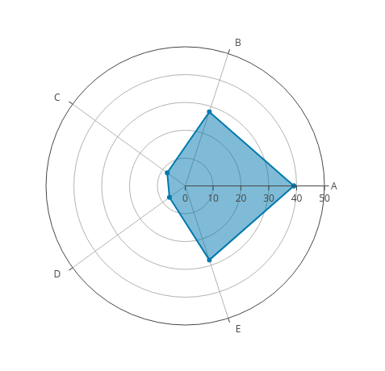
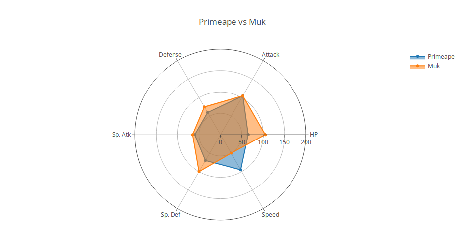

Visualizando estadisticas de pokemon usando plotly ( gráfica de radar)
Posted on sáb 01 diciembre 2018 in Tutorial Python • 4 min read
Luego de un tiempo sin escribir, retomo los artículos sobre Ciencia de Datos, ahora con visualización de datos. Para ello se usará la estadística de un repositorio de datos sobre los pokemon.
El gráfico radar es un gráfico que consiste en una secuencia de radios equi-angulares, llamados radios, y cada radio representa una de las variables. La longitud de los datos de un radio es proporcional a la magnitud de la variable para el punto de datos en relación con la longitud máxima de la variable en todos los puntos de datos. Se dibuja una línea que conecta con los valores de los datos para cada radio. Esto le da a la trama una apariencia de estrella (wikipedia). Pueden ver un ejemplo en la siguiente figura:

La idea es mostrar múltiples variables sobre la información que se tiene de los pokemons. El repositorio de datos de donde se obtienen los datos para trabajar es el sitio de kaggle.
La librería de Python que se usará en este artículo para visualizar los datos usando la gráfica radar se llama plotly, en el siguiente enlace podrán ver una galería de gráficas usando python, ya que dicha librería se puede usar también en el Lenguaje R y en Javascript. Lo bueno de plotly es que maneja más interactividad o dinamismo a las gráficas, no son simples gráficas estáticas. Plotly se puede usar en línea o desconectado.
La idea de hacer este artículo sobre visualizando estadísticas de pokemon usando plotly fue de un artículo donde usan la gráfica radar pero con matplotlib.
El tutoral básico de como usar la gráfica radar en plotly lo pueden ver en el siguiente enlace.
Este artículo se basa en un notebook que se encuentra en kaggle.
La información que contiene el repositorio es la siguiente:
-
: ID de cada pokemon.
- Name: Nombre de cada pokemon.
- Type 1: Cada pokemon tiene un tipo, esto determina su debilidad/resistencia a ataques.
- Type 2: Algunos pokemon tienen dos tipos.
- Total: Suma de todas las estadísticas.
- HP: Hit point, o health.
- Defense: Nivel de resistencia a los ataques.
- SP Atk: ataque especial.
- SP Def: Resistencia contra ataques especiales.
- Speed: Velocidad en el ataque.
Visualización de estadística de pokemon usando gráfica de radar
Enlaces de interés
- https://typewind.github.io/2017/09/29/radar-chart/
- https://www.kaggle.com/abcsds/pokemon/data
- https://plot.ly/python/radar-chart/
- https://www.kaggle.com/thebrownviking20/intermediate-visualization-tutorial-using-plotly
Se importan las librerías necesarias
In [1]:
import pandas as pd
import numpy as np
import plotly.plotly as py
import plotly.graph_objs as go
import plotly
import matplotlib.pyplot as plt
from plotly import tools
from plotly.offline import init_notebook_mode, iplot
init_notebook_mode(connected=True)
import plotly.figure_factory as ff
from IPython.display import HTML, Image
Se lee y convierte el archivo csv de los datos de pokemon en un dataframe
In [2]:
df=pd.read_csv("./datos/Pokemon.csv")
Se muestra las 5 primeras filas de datos
In [3]:
df.head()
Out[3]:
| # | Name | Type 1 | Type 2 | Total | HP | Attack | Defense | Sp. Atk | Sp. Def | Speed | Generation | Legendary | |
|---|---|---|---|---|---|---|---|---|---|---|---|---|---|
| 0 | 1 | Bulbasaur | Grass | Poison | 318 | 45 | 49 | 49 | 65 | 65 | 45 | 1 | False |
| 1 | 2 | Ivysaur | Grass | Poison | 405 | 60 | 62 | 63 | 80 | 80 | 60 | 1 | False |
| 2 | 3 | Venusaur | Grass | Poison | 525 | 80 | 82 | 83 | 100 | 100 | 80 | 1 | False |
| 3 | 3 | VenusaurMega Venusaur | Grass | Poison | 625 | 80 | 100 | 123 | 122 | 120 | 80 | 1 | False |
| 4 | 4 | Charmander | Fire | NaN | 309 | 39 | 52 | 43 | 60 | 50 | 65 | 1 | False |
Se muestra el tipo de dato de cada columna que maneja el dataframe.
In [4]:
df.info()
<class 'pandas.core.frame.DataFrame'>
RangeIndex: 800 entries, 0 to 799
Data columns (total 13 columns):
# 800 non-null int64
Name 800 non-null object
Type 1 800 non-null object
Type 2 414 non-null object
Total 800 non-null int64
HP 800 non-null int64
Attack 800 non-null int64
Defense 800 non-null int64
Sp. Atk 800 non-null int64
Sp. Def 800 non-null int64
Speed 800 non-null int64
Generation 800 non-null int64
Legendary 800 non-null bool
dtypes: bool(1), int64(9), object(3)
memory usage: 75.9+ KB
Se visualiza los datos de un sólo pokemon In [5]:
#Se busca los datos del pokemon Charizard
x = df[df["Name"] == "Charizard"]
#Se crea la grafica scatterpolar donde se le pasa las variables que se quiere graficar. HP, Ataque, defensa, SP atk,
#Sp def, velocidad y se define los nombres de los ejes.
data = [go.Scatterpolar(
r = [x['HP'].values[0],x['Attack'].values[0],x['Defense'].values[0],x['Sp. Atk'].values[0],x['Sp. Def'].values[0],x['Speed'].values[0],x["HP"].values[0]],
theta = ['HP','Attack','Defense','Sp. Atk','Sp. Def','Speed','HP'],
fill = 'toself'
)]
# se crea el layout, donde se le pasa un diccionario donde se define los ejes de los radios, que son visibles y
#su rango en este caso desde 0 a 250, no se muestra legenda, y el título de la gráfica.
layout = go.Layout(
polar = dict(
radialaxis = dict(
visible = True,
range = [0, 250]
)
),
showlegend = False,
title = "Stats of {}".format(x.Name.values[0])
)
#Se crea la instancia fig donde se pasa los datos y el layout.
fig = go.Figure(data=data, layout=layout)
#Se gràfica la gráfica
iplot(fig, filename = "Single Pokemon stats")

Comparación de 2 pokemons In [6]:
# Se crea una función donde se hace la comparación vía gráfica de la estadística de dos pokemons.
def compare2pokemon(x,y):
#Se captura los datos de los dos pokemons
x = df[df["Name"] == x]
y = df[df["Name"] == y]
#Se define lo que se quiere gráficar del primer y segundo pokemon.
trace0 = go.Scatterpolar(
r = [x['HP'].values[0],x['Attack'].values[0],x['Defense'].values[0],x['Sp. Atk'].values[0],x['Sp. Def'].values[0],x['Speed'].values[0],x["HP"].values[0]],
theta = ['HP','Attack','Defense','Sp. Atk','Sp. Def','Speed','HP'],
fill = 'toself',
name = x.Name.values[0]
)
trace1 = go.Scatterpolar(
r = [y['HP'].values[0],y['Attack'].values[0],y['Defense'].values[0],y['Sp. Atk'].values[0],y['Sp. Def'].values[0],y['Speed'].values[0],y["HP"].values[0]],
theta = ['HP','Attack','Defense','Sp. Atk','Sp. Def','Speed','HP'],
fill = 'toself',
name = y.Name.values[0]
)
#se define data como una lista que contiene los datos de los dos pokemon
data = [trace0, trace1]
#Se define el layout como en la gráfica anterior.
layout = go.Layout(
polar = dict(
radialaxis = dict(
visible = True,
range = [0, 200]
)
),
showlegend = True,
title = "{} vs {}".format(x.Name.values[0],y.Name.values[0])
)
#Se crea la instancia donde se pasa los datos y el layout
fig = go.Figure(data=data, layout=layout)
#Se crea la grafica.
iplot(fig, filename = "Two Pokemon stats")
In [7]:
# Se compara primeape y muk
compare2pokemon("Primeape", "Muk")

En siguientes artículos se seguirá mostrando ejemplos de usos de la galería de gráficas de plotly.
¡Haz tu donativo! Si te gustó el artículo puedes realizar un donativo con Bitcoin (BTC) usando la billetera digital de tu preferencia a la siguiente dirección: 17MtNybhdkA9GV3UNS6BTwPcuhjXoPrSzV
O Escaneando el código QR desde la billetera: